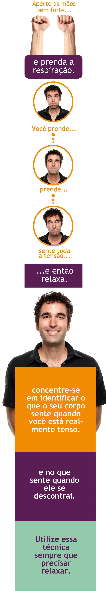

E se eu ficar nervoso antes da conversa com o gestor?
A cientista premiada com o Nobel de Fisiologia ou Medicina de 2014 e descobridora de dados fascinantes sobre o funcionamento da mente, May-Britt Moser, tem abordado este assunto.
May esclarece que um estudo de Bruce McEwen mostrou que quando submetemos animais a estresse, eles perdem sinapses, especialmente no hipocampo. Assim, sabemos que nosso cérebro não funciona tão bem quando estamos estressados.
Se o nervosismo tomar conta de você pouco antes da conversa com o gestor e se você não estiver disposto a prejudicar a qualidade deste encontro por causa disso, seria bom encontrar tempo para exercitar o relaxamento corporal.
Siga a dica da May: "Às vezes você só precisa apertar a mão bem forte e prender a respiração. Você prende, prende, sente toda a tensão, e então relaxa. Você se concentra no que seu corpo sente quando você está realmente tensa e no que sente quando ele se descontrai. Você realmente aprende a conhecer seu corpo. Mais tarde, em reuniões e ocasiões desse tipo, uso essa técnica para relaxar e tentar ser uma humana adulta em discussões difíceis...rs"
Veja o passo a passo abaixo:
